Lecture 10A: Flexible Diaphragms
Diaphragm Introduction: perseverance
We’ve made it far in our journey to pass the seismic exam. At this point we can evaluate several aspects of a building structure to ultimately determine its seismic demand. The provisions within ASCE 7 and the CBC provide enough clarity to determine this demand, without any other background knowledge. This section will be a departure from what we’ve previously learned because the content will require background knowledge outside of ASCE 7. Don’t fear, because that knowledge is presented throughout this section.
This section will cover the identification of diaphragms, analyzing code-prescribed forces through diaphragms, and various other aspects of diaphragms you’ll need to know to pass the seismic exam. There is a bit more statics and equation solving in this section than previous ones. Because of the analysis required to solve diaphragm problems, it is important to understand that you won’t be able to rely solely on ASCE 7 or the CBC to answer all diaphragm related questions on the exam. It is in your best interest to go through this section, complete some practice problems, and create a one-page note summary on all the solving procedures for diaphragms.
With that, let’s get started on identifying what exactly is a diaphragm.
To be, or not to be?
The definition of a diaphragm is a little complex, depending on how nit-picky you are. Generally speaking, any floor (off the ground) or roof attached rigidly to the walls of a building is a diaphragm. A diaphragm could be made of wood, concrete, or metal. The material is not important, but its final shape and connection to other structural elements does matter. A floor or roof system can only be considered a diaphragm when it is sufficiently connected to be able to transfer in-plane forces across itself, and to transfer shear and tension at the boundaries. A diaphragm does not only resist these in-plane (lateral) forces, but also perpendicular (gravity) forces. You may think of a diaphragm as the floor or roof system that effectively transfers lateral forces to a lateral force resisting system. We’ll get into the specifics of the forces that move through a diaphragm later in this section.
This video does a great job of showing a diaphragm made out of paper: https://www.youtube.com/watch?v=_NsdRhF2qww
When is a floor not a diaphragm? Can there ever be some sort of surface that you could walk on, but not rely on to resist lateral loads? The answer is best seen from a quick sketch:
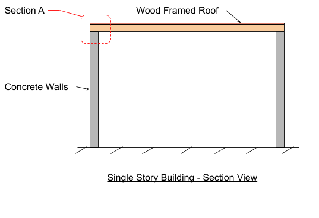 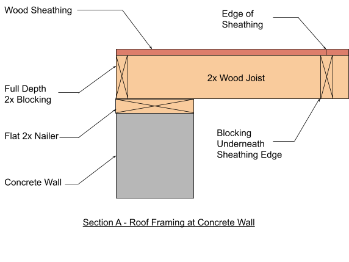The above section shows how a wood framed roof could be resting on top of a concrete wall. You could certainly walk on top of this roof, the gravity load would transfer downwards through the sheathing, to the joists, and then to the concrete wall.
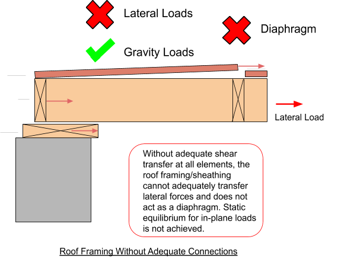If we applied a lateral or in-plane load to the roof, then the lack of adequate connections would become clear. Without connections at all elements, there would be nothing keeping the roof system tied together and it could just separate entirely when subjected to in-plane loads. Therefore this is NOT an effective diaphragm.
This roof system could still resist gravity loads, but not in-plane (lateral) loads. To address the lack of diaphragm action, we could make the following changes:
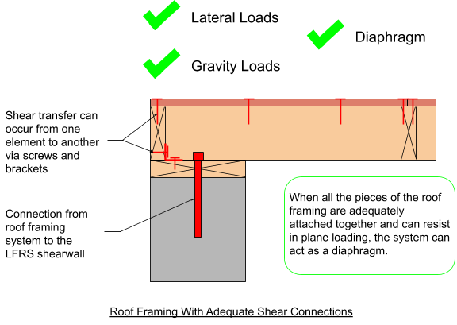By providing positive connections between all of the structural elements of the roof system we create a means for shear transfer to occur between elements. This will allow for in plane forces to transfer across the roof effectively, making it an effective diaphragm. Also note that if the connections are not adequately sized or detailed for the lateral loads, the diaphragm may still appear to be properly connected until it experiences a design level lateral load (and fails!).
Diaphragms: A discussion
If you live in a two story house and walk upstairs onto the second floor, your weight would be supported by a diaphragm. But how would you describe the second floor? Would you say it is a carpet floor? Most of us are probably used to describing houses or parts of a building by what covers the surface (which could be known as the facade or furnishing). As a soon-to-be licensed engineer, you’re definitely thinking of that structural system...
Thinking about gravity loads, how could we describe a typical second floor of a house in California? Likely the floor is a wood framed system, with wood joists spaced 16” on center that are supported on each end by either a load bearing wall or additional beam framing. There is then some plywood sheathing attached via nails to the top of the joists that provide a flat walking surface. Above this thin sheathing could go the carpet, tile, or any other more comfortable and aesthetic covering.
But as long as the floor system has some sort of vertical support at each end to carry the gravity loads further down to the foundation, it can work as intended. This system will be regularly tested every time someone or something puts weight onto the floor, so the ability of the floor to perform adequately can be easily assured. If during construction a worker feels the floor deflect unexpectedly or a supporting wall starts leaning, then a fix will be implemented. The same cannot be said of a diaphragm.
Many structural failures have occurred in buildings that seemed to have acceptable floor systems, but had improper connections that resulted in the floor not behaving as a good diaphragm. This is simply because a diaphragm is designed to resist lateral loads which are not imposed casually from humans or typical building use. Only during an extreme seismic or wind event will a diaphragm see diaphragm
loads that effectively tie the building together. To ensure that a diaphragm acts as intended when the time comes, there are many specific requirements within ASCE 7 to ensure the connections and loads are adequate.
The point of this lengthy discussion has been to give some weight to the numerous provisions in ASCE 7 so they don’t seem arbitrary or undue. After all, it could be easy to confuse a diaphragm as being just a surface that you walk on.
Diaphragm Types
Wood sheathing
Wood sheathed diaphragms are a common system used with conventional wood framed buildings (residential houses and smaller buildings). The main component is a 4ft by 8ft sheet of wood that is typically around ½” thick. This wood sheet is laid flat onto wood joists or wood trusses to serve as a primary walking surface. The sheet is nailed to the supporting wood elements, effectively creating the diaphragm system.
Image via FEMA
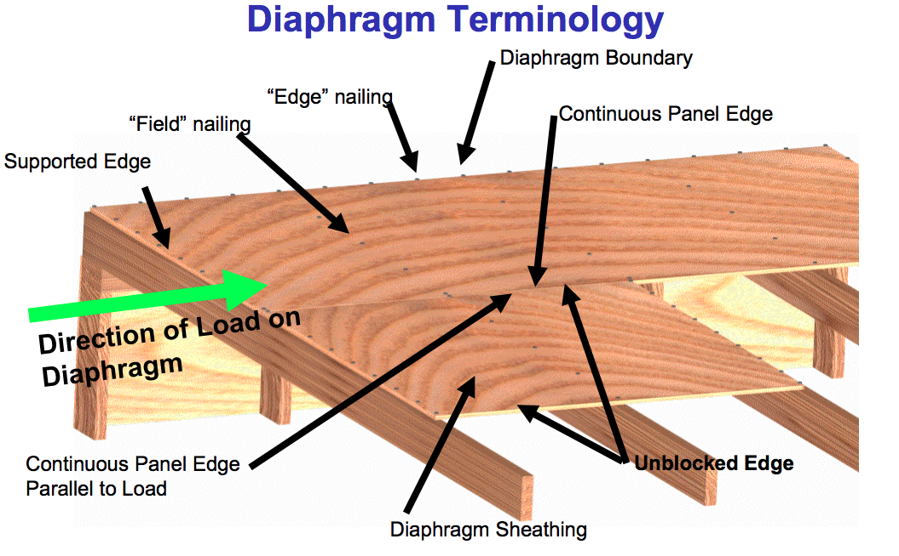To complete the diaphragm system, the outermost sheathing next to the wall will be nailed to a wood element that is securely fastened to the wall system.
{kind=link}
Image via Structure Magazine
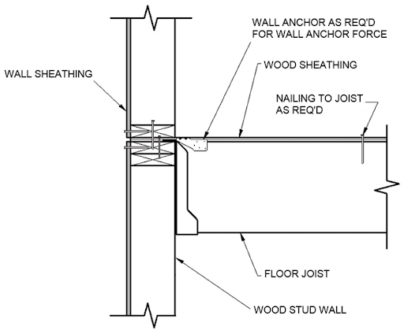Concrete Slab
An all-concrete floor system will typically have a concrete floor slab as the diaphragm element. The slab itself is a solid flat portion of concrete that could range anywhere from 6” to a foot deep and functions as the direct walking surface. It may be designed to support the gravity loads, or concrete beams may be used below the slab for support. Steel rebar reinforcement is used throughout the slab and is also provided at connections to the wall elements. This reinforcement allows for the diaphragm forces to be fully resisted.
Image via Structure Magazine
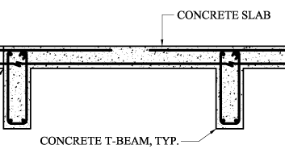Image via Structure Magazine
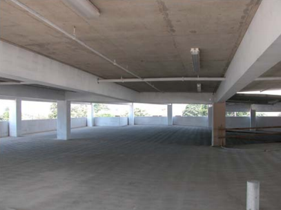Concrete fill over metal deck
Another variety of concrete diaphragm is concrete fill over metal deck. This is a composite diaphragm that consists of a metal deck that is securely fastened to a steel joist or beam below, with a concrete slab poured directly on top of the metal deck. Reinforcement is provided throughout the concrete slab, and the slab is even more rigidly attached to the framing below via shear studs that are welded before the concrete is poured. This type of construction is very typical for commercial structures and larger buildings.
Image via Open Lab
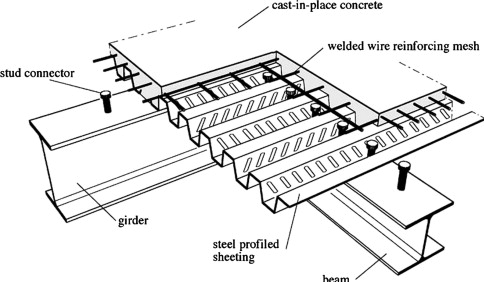 https://www.youtube.com/watch?v=_BEyZL-CpCUMetal deck
A metal deck diagram is also sometimes called an “untopped” deck because there is no concrete fill. This type of diaphragm is often used on top of steel truss joists or beams at the roof level. The top of the metal deck may be left bare; or on more commercial structures, will be filled with insulation/membrane/roof covering that provides the needed protection against water intrusion, and functions as a level walking surface.
The metal deck may be fastened to the steel framing below via welds, screws, or studs that allow shear transfer. Even though a metal deck by itself is much less stiff than a deck filled with concrete, it can still provide in-plane stiffness to act as a diaphragm.
Image via Vercodeck

Flexible vs Rigid
The rigidity or stiffness of a diaphragm dictate how forces are distributed throughout it. Very flexible diaphragms distribute force similar to simply supported beams (where the beam is the diaphragm, and the pins are the Lateral Force Resisting System). Very stiff diaphragms distribute forces based on the relative stiffness of the supporting LFRS. This creates a simple classification system for diaphragms: Rigid, Semi-Rigid, or Flexible. The question then becomes: how do we determine the classification of a diaphragm?
Provisions within ASCE 7-16 provide clear methods for determining the type of diaphragm as it relates to its stiffness. These methods are presented below.
Flexible Diaphragms: The diaphragm has very little stiffness so it cannot effectively tie the LFRS together. Each line of resistance (frame or shearwall) can move independently of adjacent lines.
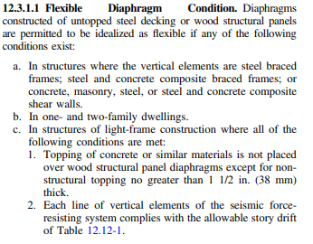Rigid Diaphragms: The diaphragm is so stiff that it effectively ties the LFRS together, meaning the LFRS must move with this diaphragm. This creates interaction between the elements.
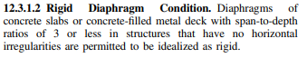Check out the following website for a good description of rigid vs flexible diaphragms:
https://learnwithseu.com/flexible-vs-semi-rigid-vs-rigid-diaphragms/This LinkedIn article also provides a good description of rigid diaphragms using software analysis:
https://www.linkedin.com/pulse/classifying-rigid-diaphragms-allen-adams//Clearly the only way to determine diaphragm flexibility is using the ASCE-7 provisions, but we can categorize the different diaphragm types from the previous sections as follows:
Flexible Diaphragms:
- Wood Sheathing
- Untopped Metal Deck
- Concrete fill over metal deck (sometimes)
Rigid Diaphragms:
- Concrete Slab
- Concrete fill over metal deck (sometimes)
Who’s that diaphragm?
Let’s do a couple quick examples for determining diaphragm flexibility. Let’s start off with an example on a flexible diaphragm.
Diaphragm Flexibility Example #1:
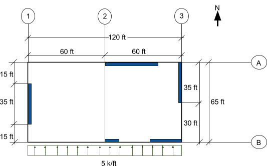Given:
- Distributed Load: 5 k/ft
- Maximum Diaphragm Deflection: 3 in
- Average Drift: 1 in
- Diaphragm: wood panels
- No horizontal irregularities
Determine if the diaphragm is flexible or rigid:
Solution: Refer to Section 12.3.1.1 of ASCE 7-16 for the code provisions on flexible diaphragms. Note that if any of the criteria in this section is satisfied, the diaphragm can be idealized as flexible. Since there is not enough information provided to check if any of the criteria is satisfied in Section 12.3.1.1, the next step is to use the criteria outlined in Section 12.3.1.3. Additionally, since the maximum diaphragm deflection and the average drift are provided in the problem statement, Section 12.3.1.3 can be used to determine if the diaphragm is flexible.
$$δ_(MDD) = 3 in$$
$$Δ_(ADVE) = 1 in$$
Use Equation 12.3-1 to determine the ratio of the maximum diaphragm deflection $$δ_(MDD)$$ and the average drift $$Δ_(ADVE)$$. If the ratio is greater than 2, the diaphragm can be considered flexible. Otherwise, the diaphragm will be considered as a rigid diaphragm.
$$δ_(MDD) / Δ_(ADVE) = (3 in) / (1 in) = 3$$
Since the ratio is greater than 2, this means that the maximum diaphragm deflection is greater than twice the average drift. (Note that even though the diaphragm material is provided, that is not sufficient for determining the diaphragm rigidity.) As a result, this diaphragm can be idealized as a flexible diaphragm.
Now, let’s move onto an example with a rigid diaphragm.
Diaphragm Flexibility Example #2:
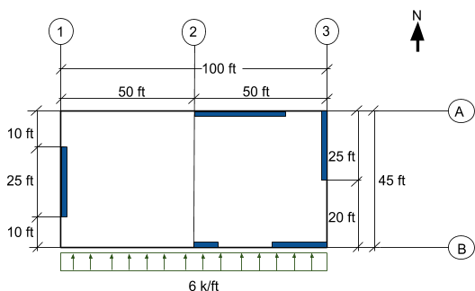Given:
- Distributed Load: 6 k/ft
- Maximum Diaphragm Deflection: 2.5 in
- Average Drift: 1.25 in
- Diaphragm: concrete slabs
- No horizontal irregularities
Determine if the diaphragm is flexible or rigid:
Solution: Refer to Section 12.3.1.2 of ASCE 7-16 for the code provisions on rigid diaphragms.
$$δ_(MDD) = 2.5 in$$
$$Δ_(ADVE) = 1.25 in$$
Using Equation 12.3-1, determine the ratio of the maximum diaphragm deflection $$δ_(MDD)$$ and the average drift $$Δ_(ADVE)$$. If the ratio is less than or equal to 3, the diaphragm can be considered rigid.
$$δ_(MDD) / Δ_(ADVE) = (2.5 in) / (1.25 in) = 2$$
Since the ratio is less than 3, this means that the maximum diaphragm deflection is less than three times the average drift. Note that since the diaphragm has concrete slabs, and the calculated ratio is less than or equal to 3, the diaphragm can be idealized as a rigid diaphragm.
A question on classifying the rigidity of a diaphragm may come up on the exam, but it would be enough to know how to use the ASCE 7 provisions and where they’re located to adequately answer the question. More importantly, questions relating to analyzing forces on diaphragms are guaranteed on the exam. Material on this topic is covered in the next section
If you want to see the exact equations for how to calculate diaphragm deflection, you can check out pg 22 of the following pdf:
https://www.osbpanel.org/pdf/L350.pdfDiaphragm Design Level Forces
Forces on a diaphragm are not exactly the same as those determined on the LFRS. We previously learned how to solve for the seismic base shear, and design force at each level of the building. These forces were intended specifically to be resisted by the LFRS. Recall that the LFRS forces have been divided by an ‘R’ value specific to that structural system, and that all of the seismic force must be resisted by the LFRS. Diaphragms don’t resist seismic force cumulatively towards the base like a LFRS, and the tributary mass is also different.
These differences require another set of equations for determining the forces in a diaphragm. See below for the ASCE 7 provisions:
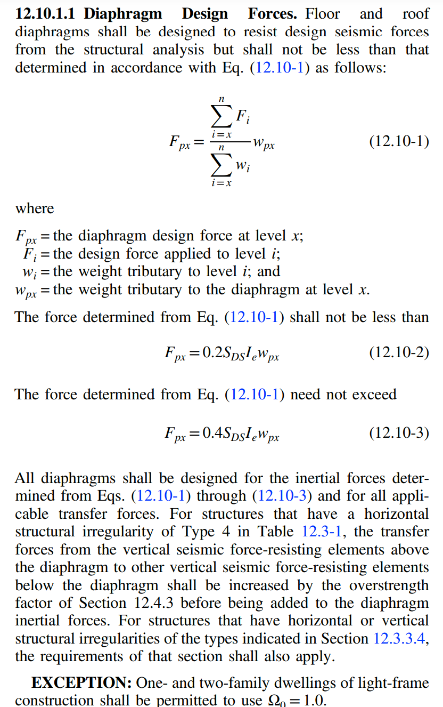Section 12.10.1.1 lists the appropriate equation (Equation 12.10-1) used to determine the diaphragm design forces at any particular level x. These forces are what the diaphragm must be able to resist at a minimum at level x. Let’s break down the components of Equation 12.10-1. Notice that the diaphragm design force Fpx is the product of a ratio and wpx, the weight tributary to the diaphragm at level x. The ratio corresponds to the summation of the forces at and the weights tributary to level i. Level x corresponds to the level of interest, while level i relates to each of the levels above level x, including the level of interest (level x). In other words, the ratio portion of Equation 12.10-1 incorporates the design forces applied to the levels above level x and the weights of the floors above level x, in addition to the design force and weight of level x. For example, for a building with 3 floors, we are asked to determine the diaphragm design force for level 1. This means that the ratio component of Equation 12.10-1 will include the summation of the design forces for levels 1, 2, and 3, as well as the corresponding weights of the three levels. If we are asked to determine the diaphragm design force for level 2, the ratio component will only include the design forces and weights tributary to levels 2 and 3. For the analysis at level 3, the diaphragm design force will equate the design force at level 3 because level 3 is the highest level in the building that we are looking at. If this still sounds confusing, don’t worry. There will be a few examples up ahead that can be used for practice.
In addition, there are two restrictions imposed on this equation. Equation 12.10-1 must result in values that are between the minimum set by Equation 12.10-2 and the maximum by Equation 12.10-3. Notice that there are three common factors shared between these two equations: the design spectral acceleration SDS, the importance factor Ie, and the seismic weight of level x wpx. The minimum diaphragm design force is governed by the constant acceleration portion of the response spectrum (SDS). The importance factor Ie determines whether the design loads should be changed (increased or decreased) based on the occupancy category.
Equation 12.10-2: Minimum: $$F_(px)≥0.2*S_(DS)*I_e*w_(px)$$
Equation 12-10.3: Maximum: $$F_(px)≤0.4*S_(DS)*I_e*w_(px)$$
Every diaphragm should be designed for the design level forces, determined from the above equations, and additional transfer forces to safely allow for force transfer in a building. In addition, depending on the structural irregularity categorized by the engineer, the overstrength factor omega may also need to be incorporated into the vertical force distribution analysis to allow for forces to be transferred via the diaphragm.
There is another important aspect of this equation, and that is the mass. The only forces resisted by a diaphragm are the tributary mass to that diaphragm’s floor level, and this mass does NOT include parallel walls that can transfer their inertial seismic force directly downwards (to the foundation, bypassing the diaphragm entirely).
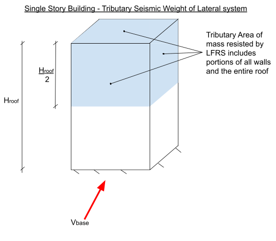 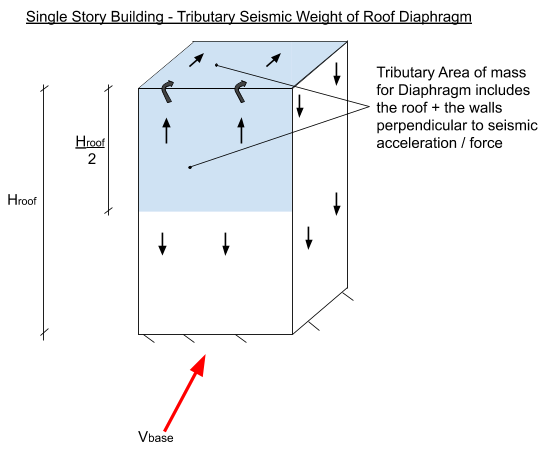You can see in the above figures that the seismic forces of perpendicular walls (which are being loaded out of plane) will be resisted via the diaphragm, but walls parallel to the seismic force do not contribute to the diaphragm load. The arrows on the second figure are just a simple way to think of where the tributary mass is moving, it does not necessarily represent the true movement of force throughout the lateral system.
For structures with very heavy walls, not having to include the mass of a parallel wall when tallying up the seismic mass tributary to a diaphragm will have a significant effect. The tributary seismic mass to a diaphragm will therefore be less than that for the LFRS at the same level. You will need to know how to account for this on the seismic exam.
To understand how the seismic mass adds up at the roof level diaphragm, let us consider a single story structure with masonry walls.
The weight of the roof and the weight of the walls perpendicular to the seismic forces contribute to the diaphragm forces and therefore are used to find the seismic mass of the structure. The walls parallel to the seismic forces do not contribute to the seismic mass of the structure that is resisted by the diaphragm, because their weight is transferred directly downwards in the structure.
∴ Total Seismic Mass resisted by the diaphragm(lbs or kips) = Total weight of roof (lbs or kips) + Total weight of walls perpendicular to the seismic forces (lbs or kips)
Total weight of roof (lbs or kips) =
=Effective Seismic Weight of roof (includes dead load and others loads*) (psf) x Plan area (sf)
- where, Plan area (sf) = Length (ft) x Width (ft) of structure

*Note: The Effective Seismic Weight is calculated in accordance to Section 12.7.2 of ASCE 7:
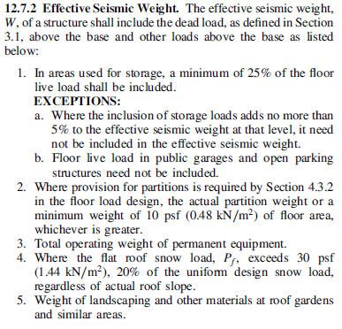Weight of walls perpendicular to the seismic forces (lbs or kips) = No. of walls x Wall Load (Wall self weight) (psf) x Tributary Wall Area (sf)
- where, the Tributary Wall Area (sf) = wall length (ft) x tributary wall height (ft)
To conclude, Total Seismic Mass resisted by the Diaphragm (lbs or kips) =
= Total weight of roof + Total weight of walls perpendicular to the seismic forces.
Questions on the seismic exam may already give you the seismic diaphragm force, or the diaphragm’s seismic mass, but if not then be sure to remember this method of adding up the weights.
Let’s now solve an example to determine the diaphragm design level forces.
Given:
- 2-story wood frame building with flexible roof diaphragm
- Risk Category II, Ie = 1.0
- SDS = 1.0, SD1 = 0.50
- Seismic base shear, V = 180 k
- Structure Period, T = 0.80 s
- Effective seismic weights:
- w2 = 250 k
- w1 = 350 k
- Story heights:
- h2 = 10’
- h1 = 12’
Determine the diaphragm design level forces.
To start off, the lateral force at each level, Fx has to be calculated. This is the product of the virtual distribution coefficient and the seismic base shear provided.
Fx = Cvx * V
$$C_(vx)=(W_k*h^k_x)/∑(w_i*h^k_i)$$
Let’s start off by dissecting the different components of the Cvx equation. In the numerator, the Wk represents the weight of the current floor level of interest, while hx denotes the height of the current floor level from the base of the building (where 0 feet begins). Notice that there is a variable k
in the exponent of hx. This k
factor relates to the period of the structure.
The vertical force distribution factor of a building is a proportion of the total weights and heights of each floor level in the structure. This means that the denominator would contain the summation of all of the weights and heights of each floor in the building. The Wi represents the weight of the ith floor level, while hi indicates the height of the ith floor level from the base of the building (where 0 feet begins).
The first step in determining the Cvx factor is to compute the k factor. For periods that are above 2.5 seconds and below 0.5 seconds, k = 2 and 1, respectively. Since the period provided in the problem statement is between the two limits, linear interpolation is used to determine the corresponding k value.
For T = 0.80 s, k = 1 + 0.3*0.5 = 1.15
$$∑(w_i*h^1.15_i)=$$
$$(350 k)*(12’)^1.15+ (250 k)*(22’)^1.15 = 14,841 k-ft$$
$$C_v_1 = (350k*(12')^1.15)/ (14841 k-ft) =0.411$$
$$F_v_1 = C_v_1 *V = 0.411*180k = 73.9k$$
$$C_v_2 = (250k*(1=22')^1.15)/ (14841 k-ft) =0.589$$
$$F_v_2 = C_v_2 *V = 0.589*180k = 106.1k$$
A good check that should always be performed is to add up the lateral forces at each level and compare it with the seismic base shear. The sum of the lateral forces should be equal to the seismic base shear.
Fv1 + Fv2 = V
73.9 k + 106.1 k = 180 k
Next, the diaphragm design force at each level, Fpx can be determined from the lateral forces. The calculated diaphragm design force should also be checked against the minimum and maximum design level forces allowed by the code.
$$F_p_x = (∑F_i)/(∑w_i)*w_(px)$$
Minimum: $$F_(px)≥0.2*S_(DS)*I_e*w_(px)$$
Maximum: $$F_(px)≤0.4*S_(DS)*I_e*w_(px)$$
Computed for Level 1: $$F_(p1) = ((F_1+F_2)/(w_1+w_2))*w_p1$$
Minimum for Level 1: $$F_(px)≥0.2*(1.0)*(1.0)*(350 k) = 70 k$$
Maximum for Level 1: $$F_(px)≤0.4*(1.0)*(1.0)*(350 k) = 140 k$$
$$F_(p1) = ((73.9 k+106.1 k)/(350+250))*350 = 105 k$$
Compare: Maximum for Level 1: Fpx = 140 k > Fp1 = 105 k > Minimum for Level 1: Fpx = 70 k
Since the calculated diaphragm design force is between the minimum and maximum allowed by the code, Fp1 = 105 k.
Minimum For Level 2: $$F_(px)≥0.2*(1.0)*(1.0)*(250 k) = 50 k$$
Maximum for Level 2: $$F_(px)≤0.4*(1.0)*(1.0)*(250 k) = 100 k$$
Computed for Level 2: $$F_(p2) = ((F_2)/(w_2))*w_p2$$
$$F_(p2) = (106.1 k)/(250)*250 = 106.1 k$$
Compare: Fp2 = 106.1 k > Maximum for Level 2: Fpx = 100 k.
Since the diaphragm design force computed for Level 2 is greater than the maximum allowed by the code, the design force that will be used for design at this level will be the maximum allowed by the code.
Maximum for Level 2: Fp2 = 100k.
| Floor Level | Minimum Diaphragm Force (k) | Computed Diaphragm Force (k) | Maximum Diaphragm Force (k) | Final Diaphragm Force (k) |
|---|---|---|---|---|
| 2 | 50 | 100 | 100 | |
| 1 | 70 | 105 | 140 | 105 |
Beam Analogy
Understanding how to determine diaphragm forces is the first stage of diaphragm design. We then need to perform the analysis procedure by applying the loads to the diaphragm itself. This will tell us the relevant forces that our diaphragm should be able to resist to perform as intended.
The analysis of a diaphragm can be compared to the procedures for a simple beam. If you’ve ever calculated shear and moment forces on a beam, the analysis for a diaphragm will look familiar. Just like a beam, a diaphragm will have internal shear forces, internal bending forces, and deflection. We’ll need to know how to calculate the moment and shear for a simple flexible diaphragm.
These forces actually vary along the length of the diaphragm, however there are known equations for the maximum shear and maximum moment at specific locations.
For a simply supported beam with a uniform load applied:
The above equations are the shorthand formulas you should know by heart for the exam, but for the sake of completeness we will go over how to determine these forces. To determine the reactions at each end (the load at the supports), we will use the simple tributary method. Each support is going to get half of the total uniformly applied load. Thus the reaction at the supports are:
- RxnA = wL/2
- RxnB = wL/2
With the reaction forces solved, we can start graphing the shear diagram. This is done by graphing the applied loads and reaction forces in the beam. This graph will tell us the internal shear in the beam along its length. Remember that the beam has a length, so when you have to graph a load with units of (lb / ft) we can plot this based on the distance along the beam.
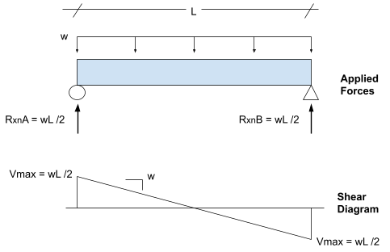These forces represent the total internal shear force in the beam. When we look at diaphragm forces later, we will make a distinction between the total internal shear force V (lb) and the uniform shear force v (plf).
Now let’s graph the bending moment along the beam. The bending moment (lb*ft) can be integrated directly from the shear diagram (lb) with respect to length. We use our knowledge of boundary conditions to get a starting value, then add up the areas under the shear diagram. The moment force at a pin or roller support is always 0 lb*ft, so with this knowledge we can create the diagram very simply.
By plotting the area under the shear diagram, we will have to multiply the values by the distance (ft) which will result in units of distance*length (lb*ft), corresponding to the units for a bending moment.
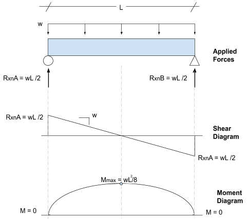We can see that the bending moment increases up until a point at the midsection, equal to wL2/8.
There's one other thing to note here: what a bending moment actually does to a beam. By cutting a section in the beam, we can see the bending moment and shear forces.
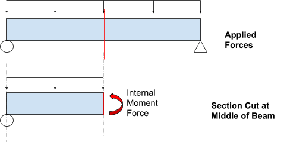What does the bending moment M actually do inside the beam? Unlike the way it’s drawn, the bending moment doesn’t exactly create circular stresses in the beam. Instead the moment is actually felt as a set of opposing forces mirrored about a ‘neutral’ axis. Without breaking any laws of statics, we can show this more accurate portrayal here:
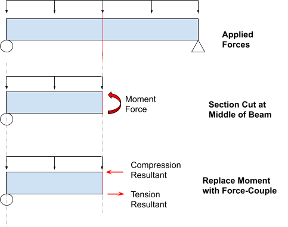Notice that the bending moment M is gone, and now there are opposing forces at the upper and lower half of the beam. These forces represent compression at the top and tension along the beam. There is also a distance between the forces, so if we did a sum of moments about the neutral axis there would be a moment in the equation. This moment would of course be equal to the M shown in the first figure.
All of this to say, a beam’s internal moment is actually resisted by internal tension and compression forces. Depending on the type of beam we could actually solve for the tension and compression forces with one simple equation. The beam shown below would have its primary tension/compression resistance at the very top and bottom of its section, and the distance (lever arm) between those distances would essentially be the depth of the beam.
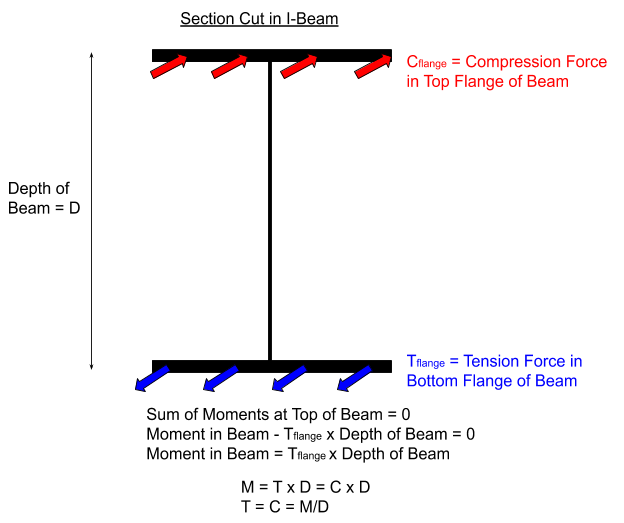Max internal Tension or Compression force from a bending Moment:
Tmax = Cmax = M / d
And that’s it on background beam knowledge! It seems like a lot at first, but it will be simple after a few example problems. The analysis of flexible diaphragms will follow this same procedure.
Direct comparison of beams to diaphragm:
- Pin supports = Lines of resistance = Frame or Shearwall.
The supports for a diaphragm are the lateral system directly below it (not above it!). - Depth of a beam = span of diaphragm parallel to applied seismic force.
The ‘depth’ of a diaphragm is simply its span along the direction of applied force. We’ll use the ‘depth’ to determine the max tension force resulting from bending.
Other definitions:
- Diaphragm Chord = the part of the diaphragm at the outermost edge that resists tension or compression
When the diaphragm bends, the bending stress creates a tension/compression resultant at the extreme edges (edge furthest from the neutral axis). This tension or compression is commonly known as a ‘chord force,’ therefore the part of the diaphragm that resists this force can be called the ‘chord.’ The ‘chord’ of the diaphragm is the specific element at the extreme edge that will resist this tension/compression. Since this force is very large, it usually can’t be resisted just from the typical diaphragm material. There will need to be supplemental reinforcement dependent on the diaphragm type. This chord could be a perpendicular wall top plate, a line of beams supporting the diaphragm, or even additional steel in a concrete slab. It all depends on the diaphragm type, but you don’t need to know the exact material type for the seismic exam, just how to calculate the chord force.
Diaphragm Chord Force = (wL2/8) / d
- Where ‘d’ is the length of the diaphragm that is parallel to the applied force (similar to the depth of a beam!).
May the Force (in a Flexible Diaphragm) be with you...
With our solid understanding of beams, let’s do a quick example for a uniform seismic load.
Let’s use our understanding of beams to solve for the forces in the above pictured diaphragm. We should solve for the following quantities:
- Maximum unit diaphragm shear
- Maximum unit wall shear
- Maximum chord force
We’re only considering loading in the N-S direction. We will also assume this to be a flexible diaphragm condition. You’ll be told on the exam if you’re dealing with a flexible or rigid diaphragm.
The other thing to note is that there are solid thick lines around the perimeter. These solid lines denote a structural shear wall. It is typical for diaphragm problems to show a thick line to represent the LFRS below the diaphragm. In this case the entire perimeter is a shear wall (so the length of the shear walls in the N-S direction are 20ft, and the length of shear walls in the E-W direction are 40ft).
Let’s start by identifying the components of this typical drawing.
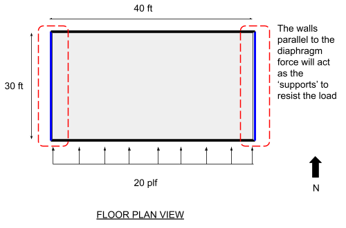The walls parallel to the seismic force (walls highlighted in blue) will resist the force, they act as the supports bracing the diaphragm.
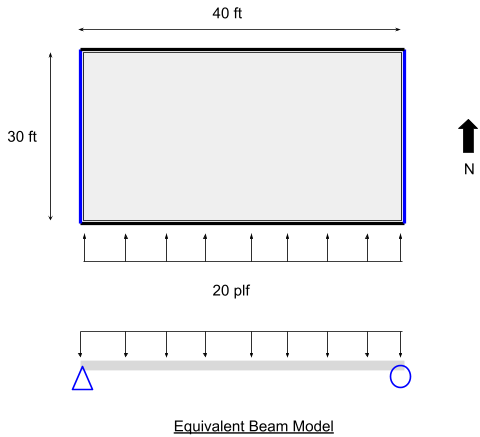It’s easy to think of the diaphragm as a beam for analysis. With this in our minds we can proceed with determining the desired forces.
Maximum Unit Diaphragm Shear:
The unit diaphragm shear is the internal shear force of the diaphragm at any point divided by the depth of the diaphragm at that location (where depth is the distance of diaphragm parallel to the force). We solve for internal shear by determining the reactions at the supports (shearwalls or frames) and then graphing the shear diagram.

Reactions at the support are simply the uniform load multiplied by the tributary width. Tributary width is the span to an adjacent support divided by two.
The maximum internal shear is equal to the reaction force (lb). Therefore the maximum unit diaphragm shear is this reaction force divided by the diaphragm depth in that direction.
Shear Force = lb = Total Shear Force
Unit Shear = lb / ft = Total Shear Force / Depth
Diaphragm depth is NOT the same as the shearwall length! They may sometimes be equal, sometimes not. The below picture shows the diaphragm separated from the shearwall to illustrate the difference.
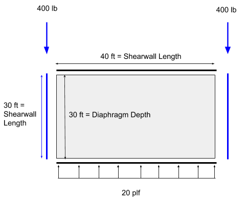The maximum diaphragm shear is the max shear (equal to the reaction force) divided by the diaphragm depth of 30ft.
The below image shows the shears in the diaphragm versus the wall.
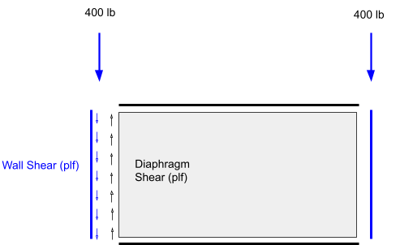 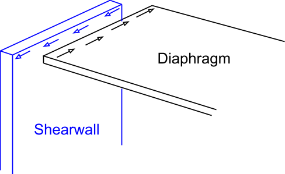The above 3D view shows the diaphragm separated from the shearwall. Since the diaphragm and shearwall are of equal length, the unit shear for both of them is the exact same. Although we haven’t covered the exact method for transferring the diaphragm shear to the shearwall (again this depends on the material type) you should at least feel comfortable with this level of abstraction before continuing. Remember that lengths of the shearwall and diaphragm are important.
To continue our original example, we are trying to determine the max unit diaphragm shear. This would be the black arrows in the above 3D drawing.
First solve for the maximum diaphragm shear force, for example purposes we will show the graph.
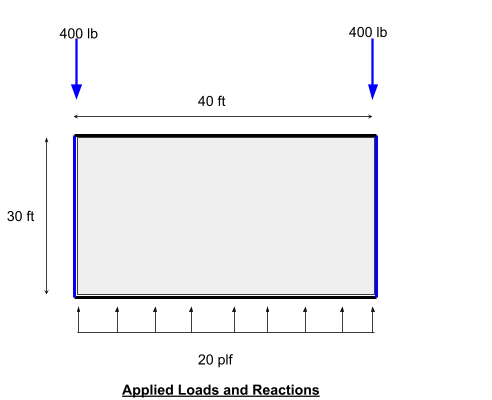 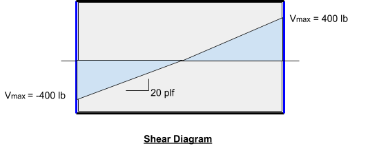The maximum shear force in the diaphragm occurs at the shearwall locations. The above graph shows the shear force at any point along the width of the diaphragm. The shear diagram is determined from graphing the loads applied to the diagram.
- Unit diaphragm shear = Maximum Shear Force / Depth of Diaphragm Parallel to Force
- Unit diaphragm shear = 400 lb / 30 ft = 12.1 lb / ft = 12.1 plf
Finally, we can solve for the maximum chord force.
To solve the chord force at any location we would need a graph of the moment force along the width of the diaphragm, presented below.
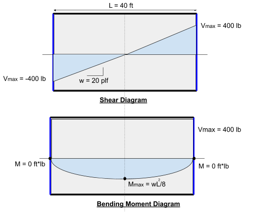The bending moment is integrated directly from the shear diagram. Basic integration rules tell us where maximums can occur. The maximum moment will occur at the location where shear force is equal to zero (representing a positive to negative slope change in the moment diagram). Since the shear diagram is zero in the middle of the span (true for all simple beams with a uniform load), then the middle of the span is also the location of maximum moment.
Mmax = Vmax x L/2 / 2
Mmax = 20 plf x (40 ft)2 / 8 = 4000 lb*ft
This doesn’t look like the formula presented on the moment diagram, but if we substitute the actual value of Vmax...
- Vmax = w x L/2
- Mmax = w x L/2 x L/2 / 2 = w x L2 / 8 =wL2/8
The above equation should be memorized for the exam, you can expect a question that requires this calculation.
Now the max chord force is simply the max moment divided by diaphragm depth:
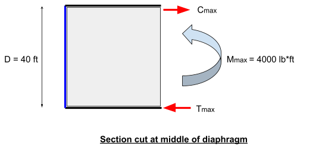By cutting a section through the center of the diaphragm, this will coincide with the location of maximum moment, and also zero shear.
Cmax (compression) and Tmax (tension) represent the chord forces that are balancing the bending moment. To reiterate, these chord forces are resisted by some element of the diaphragm (specific to each type of diaphragm).
- Cmax = Mmax / D = 4000 lb*ft / 30 ft = 133 lb
- Tmax = Mmax / D = 4000 lb*ft / 30 ft = 133 lb
The derivation of the above equation is simply done by taking a sum of moments at either the compression or tension side. The bending moment is always there no matter where you choose the origin for the summation. Also remember that all of our analysis is assuming static equilibrium, so the sum of any forces will by definition be equal to zero.
Sum of moments at Tmax = 0 = Mmax - Cmax x D
Subtracting Mmax to the other side and dividing both terms by D gives us the simplified equation of C = M/D.
So now that we know the maximum moment force, can we also determine the moment force at any location along the diaphragm? What if a question asks to determine the chord force at a specific distance along the diaphragm, instead of the maximum?
To determine moment force (and therefore the chord force) at any point along the diaphragm, we simply integrate the total shear force from the edge of the diaphragm span to the location of interest. This is a skill that may be tested on the exam.
Example) Determine the chord force 5 ft along wall line B measured from the left end:
For a quick check, we know the maximum chord force is located at the center of the wall: Cmax = Mmax / D = w x L2 / 8 / D =(60 plf)(40 ft)2/8 / (20 ft) = 600 lb
The chord force located at any point x
along wall line B (starting from the left side) is the moment force at that point in the diaphragm divided by the depth.
To determine the moment force at any point, we just need to integrate the shear diagram from either side up to the point of interest (shown where the dotted red line intersects the graph).
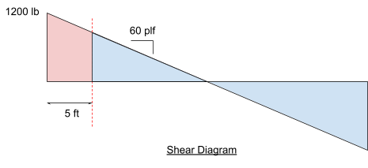Highlighting the desired area of shear in red, we solve for this area using basic geometry: Area = 1200 lb x 5ft - ([60 plf x 5ft] x 5ft / 2) = 6000 lb*ft - 750 lb*ft = 5250 lb*ft
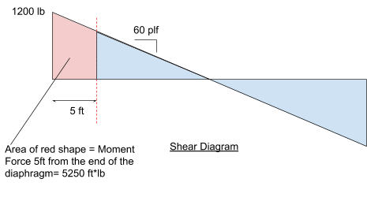We could also turn this into a generic formula if that makes more sense:
M(a) = R1* a - (w * a^2 / 2) = w x L / 2 x a - (w x a^2 /2)
C(a) = M(a) / D
Although we said area, the result is in units of lb*ft. This is correct because we are trying to solve for the moment force at 5ft from the edge. Our units aren’t actually going to be in terms of square inches or feet, we refer to it as area because of the mathematical solution using areas of the graph.
With the moment determined, now we simply divide by the depth of the diaphragm at that location.
Chord force = 5250 lb*ft / (diaphragm depth) = 5250 lb*ft / 40 ft = 131 lb
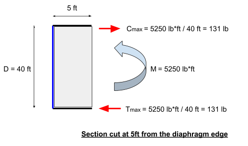Compared to our earlier result of 600 lb for the maximum chord force at the center of the diaphragm, our current answer of 131 lb for the chord force at 5 ft from the edge is acceptable.
Determining the maximum chord force and the chord force at a location along a diaphragm span are two possible (and likely) questions on the seismic exam.
Collectors
To recap, diaphragms are horizontal elements in a structure that transfer the lateral forces acting on the structure to the vertical elements, such as shear walls.
Image via AWC

The shear walls then transfer the desired shear load and possible overturning moment to the foundation using holdowns and anchor bolts. These shear walls must be designed properly and should have the desired stiffness to resist the applied diaphragm reaction.
Image via Nishkian
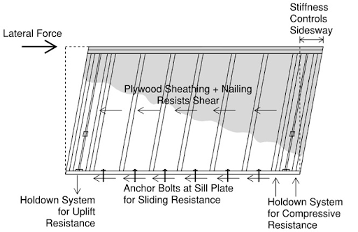So the question arises, how does the diaphragm transfer the loads onto the shear walls? Here, we introduce collectors, commonly known as struts. Collectors are one of the boundary elements of the diaphragm, included along the perimeter of shear walls as shown in the figure below. When there is not a full-length shear wall, a collector will be needed. This means that collectors can also occur along the interior of a structure.
Image via Nishkian
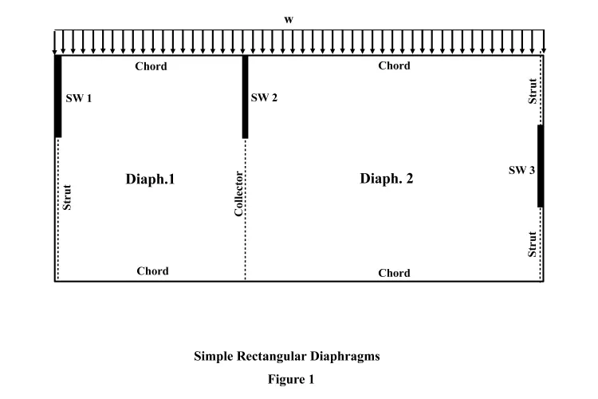The role of collectors is to collect the transverse diaphragm shear reactions and transfer it to the shear walls as shown in the figure below.
Image via Missouri University of Science and Technology
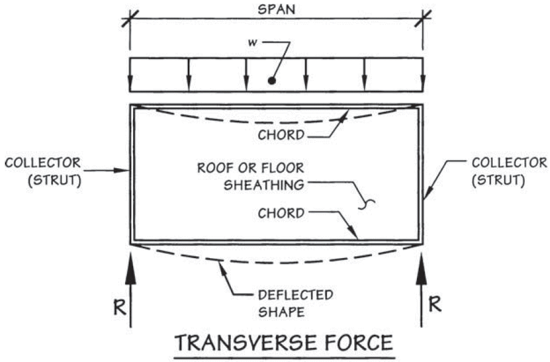We can have full-length shear walls or partial-length shear walls with openings for windows or re-entrant corners. For full-length shear walls, the diaphragm shear is transferred equally along the full length in terms of unit shear. The following figure shows the variation of the shear force diagram and the collector force diagram for a full length shear wall.
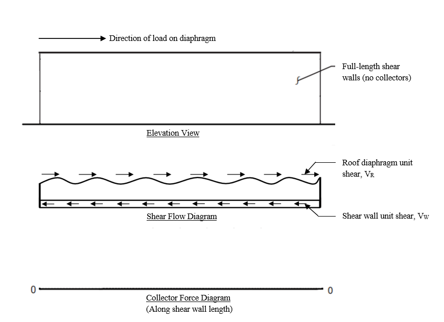We can see that the shear is transferred equally along the full length of the shear wall and the collector force along the shear wall length is zero. So, there is no need to provide collectors for a full length shear wall.
For partial lengths of the shear wall, the diaphragm shear in the non-shear wall portion is collected into the collector. The collector then transfers this force and concentrates it into the in-plane shear wall using connections such as steel straps as shown in the figure below.
Image via NEHRP
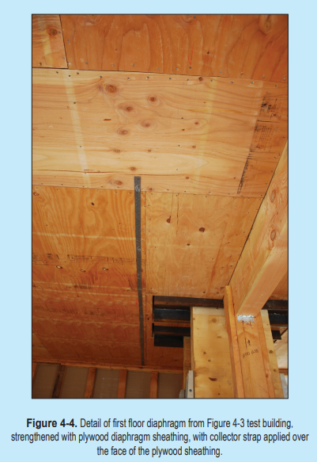The following figure shows the variation of the shear force diagram and the collector force diagram for a partial length shear wall that has headers and collectors over the openings.

It can be seen that the shear is not transferred through the openings in the shear wall. This leads to large collector forces in the shear wall around the openings. So, collectors are provided here to collect the diaphragm shear from the openings and transfer it to the in-plane shear wall with the use of steel straps and other connections.
The ASCE 7 standard section 12.10.2 refers to collectors as shown in the figure below.
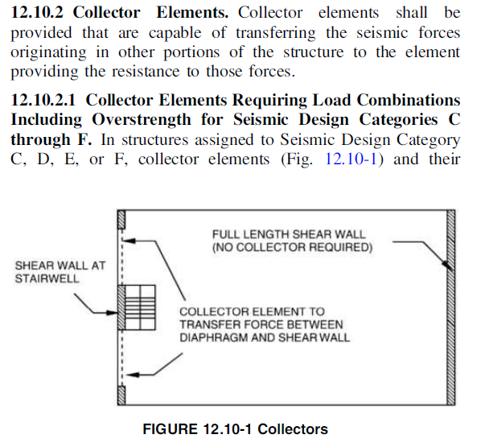 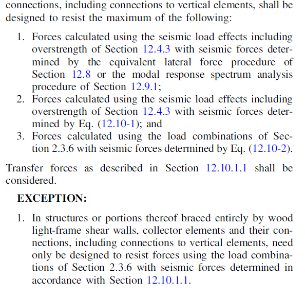ASCE 7 section 12.10.2.1 notes that the design of collectors requires load combinations with the Earthquake force multiplied by the overstrength factor. So what is overstrength and why is it required for collector design?
Recalling from Lecture 6, the concept of ductility relates to the ability of a lateral system to perform in the inelastic range, which lowers the design seismic force. There is a crucial part of the determination of seismic forces, where the mass and acceleration products are divided by the ductility of the LFRS ‘R’. This means that the seismic design loads are always tied to a specific LFRS and its corresponding ductility.
Collectors are used to transfer seismic forces from the diaphragm into the LFRS. Should a collector be assumed to have the same ductility (and therefore the seismic force reduction) as the LFRS? The short answer is no. The energy dissipation available in the collector element may not be as ‘good’ as the LFRS, so the collector design force should be amplified to ensure that it does not fail before it can transfer the force into the LFRS.
The overstrength factor or ‘Omega’ represents the ratio of the maximum force in a lateral system to the design level force. Using this factor in load combinations for collectors will ensure that the collector doesn’t yield or fail unexpectedly. We want our ductility and inelastic response to occur in the lateral system, not in a single collector element.
Thomas Heausler does a great job of summarizing omega and its use as follows: Omega zero is an amplification to the forces in certain elements in the seismic load path. It is required so as to prevent a weak link form occurring prior to the full energy dissipation and ductility potential of the primary feature of the lateral system. For example, in a steel braced frame system, in order for the diagonal brace to yield and dissipate energy in a controlled and reliable manner, all other portions of the load path (e.g. connections, bolts, welds, gusset plates, anchor bolts, columns and collectors) need to be stronger than the maximum anticipated strength, or force, in the brace. Therefore, Omega zero amplification and load combinations are specifically triggered in the sections mentioned above and in Material Standards such as AISC and ACI.
There is also an exception to this requirement: For buildings that have a lateral system consisting of only wood shear walls, the Omega factor is not required in collector design. On the other hand, a masonry warehouse requires incorporating the overstrength factor. This allowance for wood shear walls is due to available historical data and overall redundancy in these types of lateral systems.
Actual collector design is outside the scope of the seismic exam. Just being able to identify what a collector element is, the collector force, and when to use omega is enough for the exam.
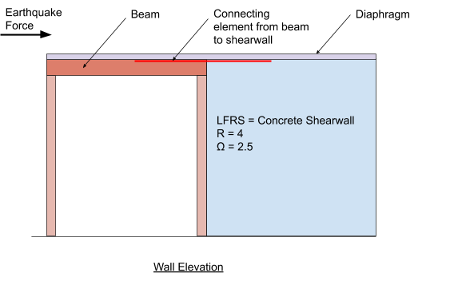What elements of the above elevation would require omega? The LFRS (shear wall) does not require omega, our code based forces are already suited for that element. The connection from the diaphragm to the LFRS (shear wall) does not require omega either because that is considered a part of the typical lateral system.
The beam and connecting element from the beam to the shear wall should be designed with omega. Even though they are not a part of the lateral system, they are required to transfer all of the diaphragm shears into the LRFS. They are not a part of the lateral system but are required to transfer all of the diaphragm shears into the LFRS.
Sample Problem: Flexible Diaphragm #1
Given:
- Single-story wood frame building with flexible roof diaphragm
- Wood-structural panel (WSP) horizontal diaphragm
- Wood-structural panel (WSP) shear walls
- N-S Direction:
- Diaphragm span L = 130 feet
- d = 55 ft
- Seismic base shear V = 36,000 lbs
- E-W Direction:
- Diaphragm span L = 55 ft
- d = 130 ft
- Assume uniform load on the diaphragm: w_s = V/L
- Redundancy factor = 1.0
N-S Direction: Analyze the diaphragm forces for Lines 1&3.
- Maximum unit (roof) diaphragm shear Vr
- Maximum unit wall shear Vw
- Maximum chord force on lines A & B, CF
- Maximum drag force Fd
Solution:
a) First, determine the design seismic force for the direction of interest (N-S direction) by dividing the base shear by the length of the side of the diaphragm facing the direction of interest (diaphragm span L). Note the direction of interest is also known as the direction of the force.
ws = V/L = (36,000 lbs) / 130 ft = 277 plf
Next, find the shear acting on Wall Lines 1 and 3. Since there are two lines of action that are of interest, divide the design seismic force determined in the previous step by 2.
V1 = V3 = ws * L / 2
V1 = V3 = (277 plf) * (130 ft) / 2 = 18,005 lbs
Finally, determine the unit roof diaphragm shear by dividing the shear over the length of the side of the diaphragm (d) oriented in the direction of interest (N-S direction).
Roof v1 = v3 = v1 / d = (18,005 lbs) / 55 ft = 327plf
b> Begin by determining the length of the shear wall for the N-S direction. Subtract the length of the wall with no shear wall from the total length of the wall. Sketches of the corresponding calculations for the shear walls along Wall Lines 1 and 3 are shown below. Determine the unit wall shear by dividing the wall shear over the length of the shear wall.
- Wall Line 1: Length of shear wall = Total length of wall - length of wall with no shear wall
- Wall Line 1: Length of shear wall = 55 ft - 20 ft = 35 ft
- Wall V1 = V1 / shear wall length = (18,005 lbs) / 35 ft = 514 plf

Repeat the same steps for Wall Line 3.
- Wall Line 3: Length of shear wall = Total length of wall - length of wall with no shear wall
- Wall Line 3: Length of shear wall = 55 ft - 25 ft = 30 ft
- Wall Line 3: Length of shear wall = 30 ft
- Wall V3 = V3 / shear wall length = (18005 lbs) / 30 ft = 600 plf
The largest unit wall shear governs because that denotes the worst case for analysis and design. In this case, the maximum unit wall shear is 600 plf.
c) First, determine the moment induced by the unit shear.
- Moment Induced by the Unit Shear = ws * L^2 / 8
- Moment Induced by the Unit Shear = (277 plf) * (130 ft)^2 / 8 = 585,162.5 lb-ft
Next, divide the moment induced by the unit shear by the length of the walls in the direction of the force (N-S direction).
- Maximum Chord Force = Moment Induced by the Unit Shear / d
- Maximum Chord Force = 585,162.5 k-ft / 55 ft = 10,639 lbs
d) Determine the unit roof diaphragm shear for each line of action.
- Wall Line 1: Roof v1 = 327 plf
Determine the drag force by multiplying the unit roof diaphragm shear by the length of the wall that is not a shear wall.
- Fd = v1 * (non-shear wall length)
- Fd = (327 plf) * (10 ft) = 3270 lbs
Repeat the steps to determine the maximum drag force for Wall Line 3.
- Wall Line 3: Roof v3 = 327 plf
- Fd = v3 * (non-shear wall length)
- Fd = (327 plf) * (25 ft) = 8175 lbs
The largest drag force governs because that denotes the worst case for analysis and design. In this case, the maximum drag force is 8175 lbs.
Now let’s try a similar example, but this time with three wall lines. Be sure to pay specific attention to how the forces are calculated around the middle line of resistance (Wall Line 2).
Sample Problem: Flexible Diaphragm #2
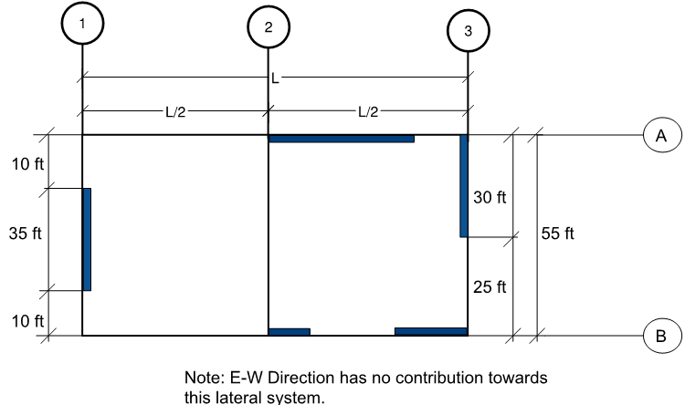N-S Direction: Analyze the diaphragm forces for Lines 1, 2 & 3.
- Maximum unit (roof) diaphragm shear Vr, & reduction of maximum unit (roof) diaphragm shear
- Maximum unit wall shear Vw, & reduction of maximum unit wall shear
- Maximum chord force on lines A & B, CF & reduction of maximum chord force
- Maximum drag force Fd, & reduction of maximum drag force
Solution:
a) First, determine the design seismic force for the direction of interest by dividing the base shear by the length of the side of the diaphragm facing the direction of interest. This will be the design seismic force over the entire length of the diaphragm for the direction of interest.
- ws = V/L = (36,000 lbs) / 130 ft = 277 plf
Next, distribute the design seismic force of the side of the diaphragm facing the direction of interest to that in the direction of interest. Since there is a line of action added into the center (line 2), it will create two diaphragms that span equally. Hence L1 = L2 = L / 2. Now, there are two lines of action that are of interest for determining the unit roof diaphragm shear, divide the design seismic force determined in the previous step by 2.
- V1 = V3 = ws * L1
- V1 = V3 = (277 plf) * (65 ft) / 2 = 9003 lbs
Finally, determine the unit roof diaphragm shear by dividing the design seismic force over the length of the side of the diaphragm oriented in the direction of interest.
Roof v1 = v3 = v1 / d = (9003 lbs) / 55 ft = 164 plf
b) Begin by determining the length of the shear wall for the line of interest. Subtract the length of the wall with no shear wall from the total length of the wall. Determine the unit wall shear by dividing the wall shear over the length of the shear wall.
- Wall Line 1: Length of shear wall = Total length of wall - length of the wall with no shear wall
- Wall Line 1: Length of shear wall = 55 ft - 20 ft = 35 ft
- Wall V1 = V1 / shear wall length = (9000 lbs) / 35 ft = 257 plf
Repeat the same steps for determining the unit wall shear of Wall Line 1.
- Wall Line 2: Length of shear wall = 55 ft
- Wall V3 = V1 / shear wall length = (18000 lbs) / 55 ft = 327 plf
Repeat the same steps for determining the unit wall shear.
- Wall Line 3: Length of shear wall = 55 - 25 = 30 ft
- Wall V3 = V1 / shear wall length = (9000 lbs) / 30 ft = 300 plf
The largest unit wall shear governs because that denotes the worst case for analysis and design. In this case, the maximum unit wall shear is 327 plf.
First, determine the moment induced by the unit shear.
- Moment Induced by the Unit Shear = ws * L^2 / 8
- Moment Induced by the Unit Shear = (277 plf) * (65 ft)^2 / 8 = 146,291 k-ft
Next, divide the moment induced by the unit shear by the length of the walls in the direction of interest.
- Maximum Chord Force = Moment Induced by the Unit Shear / d
- Maximum Chord Force = 146,291 k-ft / 55 ft = 2660 lbs
d) Determine the unit roof diaphragm shear for each line of action.
- Wall Line 1: Roof v1 = 164 plf
Determine drag force by multiplying the unit roof diaphragm shear by the length of the wall that is not a shear wall.
- Fd = v1 * (length of wall that is not a shear wall)
- Fd = (164 plf) * (10 ft) = 1640 lbs
Repeat the steps to determine the maximum drag force for Wall Line 2.
- Fd = v2 * (length of wall that is not a shear wall)
Repeat the steps to determine the maximum drag force for Wall Line 3.
- Fd = v3 * (length of wall that is not a shear wall)
- Fd = (164 plf) * (25 ft) = 4100 lbs
The largest drag force governs because that denotes the worst case for analysis and design. In this case, the maximum drag force is 4100 lbs.
Sample Problem: Flexible Diaphragm #3 with Parapet
Consider the following diaphragm: 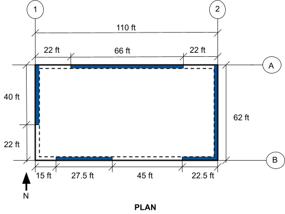 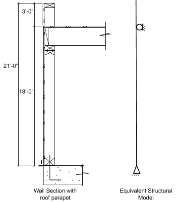 Given:- Wood shear walls
- Flexible roof diaphragm
A. Seismic Force in N-S DIRECTION
- Design seismic force to diaphragm, ws
- Unit roof shear on lines 1 and 2, vr
- Maximum chord force on lines A and B, CF
- Drag force diagram on lines 1 and 2, Fd
B.Seismic Force in E-W DIRECTION
- Design seismic force to diaphragm, ws
- Unit roof shear on lines A and B, vr
- Maximum chord force on lines 1 and 2, CF
- Drag force diagram on lines A and B, Fd
The first step for a diaphragm problem is to decide the seismic coefficients for the given structure based on the data provided:
- For Office Building - Based on CBC Table 1604.5
- Based on ASCE 7-16 Table 1.5-2 and Risk Category II
- Based on ASCE 7-16 Table 12.2-1 item B.22: Light frame (wood) walls sheathed with wood structural panels rated for shear resistance (NOTE: The question statement specifically notes the building frame system, so that is why we use section B of the table).
Next, determine the total diaphragm design force acting at the roof level using the following steps:
- Note: For a single-story building, by observation, T = Ts. Therefore, ASCE 7-16 eq. 12.8-2 will govern Cs:
- Cs = SDS/(R/Ie) = 0.95/(7/1.0) = 0.136
- V = Cs x W = 0.136W
$$ F_px = {∑↙{i=x}↖n F_i / ∑↙{i=x}↖n w_i} *w_px$$
For a single story building, F1 = V
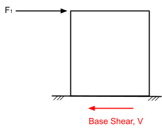∴ Fp1 = Cs x W x wp1 / W
- = 0.136 wp1
Applying checks for maximum and minimum Fp1:
→ Maximum:
Fp1 <= 0.4 x SSD x Ie x wp1
- = 0.4(0.95)(1.0) x wp1
- = 0.380 wp1 … OK
→ Minimum:
Fp1 <= 0.2 x SSD x Ie x wp1
- = 0.2(0.95)(1.0) x wp1
- = 0190 wp1 … NOT OK
Now, let’s move on to the actual solution:
Part A: North - South Direction: L = 110 ft, b = 62 ftDesign seismic force to Diaphragm, ws:
- ws = fp1 = Fp1/L
Where, Fp1 = 0.190 wp1, and
wp1= total weight of the roof diaphragm taken into consideration
- =(roof DL+20% Snow)xPlan area + weight of N-S Exterior walls
- =(22 psf + (0.2)100 psf)(110 ft)(62 ft) + (12 psf)(12 ft*)(2 walls)(110 ft)
- = 318,120 lbs
*Note: For roof with parapets, the effective tributary width of the exterior walls = (roof height/2) + parapet height = (18 ft /2) + 3 ft = 12 ft
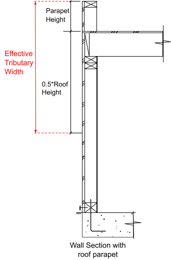Now, Fp1 = 0.190 wp1
- = 0.190 (318,120 lbs)
- = 60,443 lbs
Finally, ws = fp1 = Fp1 / L
- = 60,443 lbs / 110 ft = 549.5 plf
2. Unit Roof Shear on lines 1 and 2, vr:
Consider the walls along the N-S direction to act as supports that resist the in-plane shear, and the diaphragm to act as a simply supported beam:
∴ Total roof shear on lines 1 and 2:
- = V1 = V2 = ws x L / 2
- = 549.5 plf x 110 ft / 2 = 30,223 lbs
Unit roof shear on lines 1 and 2:
- = v1 = v2 = V1 / b
- = 30,222.5 lbs / 62 ft = 487.5 plf (SD/LRFD force level)
3. Maximum Chord forces on lines A and B, CF:
Again, consider the walls along the N-S direction to act as supports and the diaphragms to act as a simply supported beam. We know that for a simply supported beam, Maximum moment = w x L2 / 8.
∴ Maximum Moment, M = ws x L2 / 8
- = 549.5 plf x 110 ft2 / 8 = 831,119 lb-ft
Maximum Chord Force, CF = M / b
- = 831,120 lb-ft / 62 ft = 13,205 lb (SD/LRFD force level
4. Drag Force Diagrams on Lines 1 and 2:
For wall line 1:- = 30,223 lbs / 40 ft = 756 plf
- = 487.5 plf x 22 ft = 10,725 lbs
Alternatively, Fd = V1 - (v1 x length of shear wall)
- = 30,223 lbs - (487.5 plf x 40 ft) = 10,725 lbs (approx.)
 For wall line 2:
For wall line 2:
The wall line 02 has a full-length shear wall. Thus, the entire diaphragm shear is distributed to the full length of the shear wall. In this case, there is no collector element and so the collector force is zero.
The mathematics for the problem is shown below:
- = 30,223 lbs / 62 ft = 487.5 plf
- = 0 lbs
Alternatively, Fd = V2 - (v2 x length of shear wall)
- = 30,223 lbs - (487.5 plf x 62 ft) = 0 lbs (approx.)
1.Design seismic force to Diaphragm, ws:
ws = fp1 = Fp1/L
Where, Fp1 = 0.190 wp1, and wp1 = total weight of the roof diaphragm taken into consideration
- =(roof DL +20% Snow) x plan area + weight of E-W Exterior walls
- = (22 psf + (0.2)100 psf)(110 ft)(62 ft) + (12 psf)(12 ft*)(2 walls)(62 ft)
- = 304,296 lbs
*Note: For roof with parapets, the effective tributary width of the exterior walls is:
- = (roof height/2) + parapet height
- = (18 ft /2) + 3 ft = 12 ft
Now, Fp1 = 0.190 wp1
- = 0.190 (304,296 lbs)
- = 57,816 lbs
Finally, ws = fp1 = Fp1 / L
- = 57,816 lbs / 62 ft= 932.5 plf
2. Unit Roof Shear on lines A and B, vr:
Consider the walls along the E-W direction to act as supports and the diaphragm between them to act as a simply supported beam:
∴ Total roof shear on lines A and B:
- = VA = VB = ws x L / 2
- = 932.5 plf x 62 ft / 2 = 28,908 lbs
Unit roof shear on lines A and B:
- = vA = vB = VA / b
- = 28,908 lbs / 110 ft = 263 plf (SD/LRFD force level)
3. Maximum Chord forces on lines 1 and 2, CF:
Again, consider the walls in the E-W direction to act as supports and the diaphragm between them to act as a simply supported beam. We know that for a simply supported beam, Maximum moment = w x L2 / 8
∴ Maximum Moment, M = ws x L2 / 8
- = 932.5 plf x 62 ft 2 / 8 = 448,066 lb-ft
Maximum Chord Force, CF = M / b
- = 448,066 lb-ft / 110 ft = 4073 lbs (SD/LRFD force level)
4. Drag Force Diagrams on Lines A and B:
For wall line A:- = 28,908 lbs / 66 ft = 438 plf
- At 22 ft: Fd = 263 plf x 22 ft = 5786 lbs
- At 88 ft: Fd = (263 plf x 88 ft) - 28,908 lbs = -5764 lbs
- At 110 ft: Fd = 0 lbs
- Alternatively, Fd = (263 plf x 110 ft) - 28,908 lbs = 0 lbs
VB = 28,908 lbs
This roof shear is concentrated in a single shear-wall in a wall line. But, if we have multiple shear walls in the wall line, we can distribute the roof shear in the different shear wall segments using the following method:
For multiple shear-walls in a single wall line, we can find the unit shear in each shear-wall segment as follows:
- Total shear wall length = 27.5 ft + 22.5 ft = 50 ft
- Therefore, unit shear in each wall length = Total Shear/ Shear-wall length
- Therefore, unit shear in each wall length = Total Shear/ Shear-wall length
So, the unit shear for each shear-wall in a wall line is the same i.e. 578 plf.
Therefore;
- Shear force = 578 plf x 27.5 ft = 15,900 lbs
- Shear force = 578 plf x 22.5 ft = 13,008 lbs
vB = 263 plf
Collector force, Fd:
- = - 4,723 lbs
- = 7,113 lbs
- = 28,908 lbs - 28,908 lbs = 0 lbs
This concludes the final problem for flexible diaphragms.